01 / PRODUCT STRATEGY
Frame the decision before the interface
User/owner decision, constraint, alternatives, trade-offs and the next decision stay explicit before visual polish.
Decisions before screens.
Problem → evidence → flow → system → prototype → validation → repair.
Recruiter scan / capability proof
A 60-second map of the product-design scope demonstrated across personal projects. Each capability points to inspectable case evidence. It is evidence of scope and decision quality, not a tenure claim.
User/owner decision, constraint, alternatives, trade-offs and the next decision stay explicit before visual polish.
Direct evidence, desk/proxy evidence, hypotheses, planned validation and unknowns are kept distinct instead of being collapsed into “insights.”
Queues, permissions, approvals, failure, recovery and exception states are treated as product structure.
Interaction states, dense information hierarchy, responsive rules and reusable visual language carry product intent across surfaces.
Flows, states and responsive contracts continue into working prototypes and design-to-code implementation instead of stopping at presentation frames.
Test plans, measurement targets, accessibility/browser QA and failure→repair loops make quality inspectable without inventing outcomes.
Product practice
Polished UI is only useful when the team can explain what decision it supports, what evidence shaped it, what trade-off was made and how the result will be checked. My work therefore connects product framing, information architecture, interaction states, visual systems, working code and evidence-aware QA.
Start with the user decision, owner objective, risk and success signal before choosing a feature or layout.
Benchmarks, AI critique and heuristic review can guide a design; they do not become user research unless users actually produced the evidence.
Flows, states, responsive rules and recovery paths belong in the prototype — not only in presentation slides.
AI can inspect, synthesize, generate alternatives, implement and test. Humans retain product priorities, research interpretation, trade-offs and release judgment.
Flagship product + systems work
The sequence shows how I work across AI-assisted delivery systems → consumer financial decisions → operational risk systems.
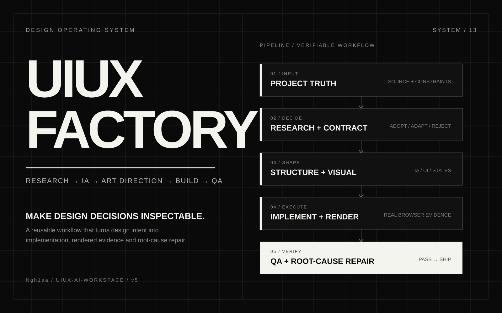
AI workflow + evidenceA verifiable operating system for project truth, decision contracts, implementation, browser QA and root-cause repair — built to make AI-assisted work faster without making evidence or ownership optional.
Use AI as an inspectable co-pilot across research synthesis, exploration, implementation and QA instead of treating generated output as final authority.
Repository, contracts and QA harness are real; organization-wide adoption and efficiency gains are not claimed.
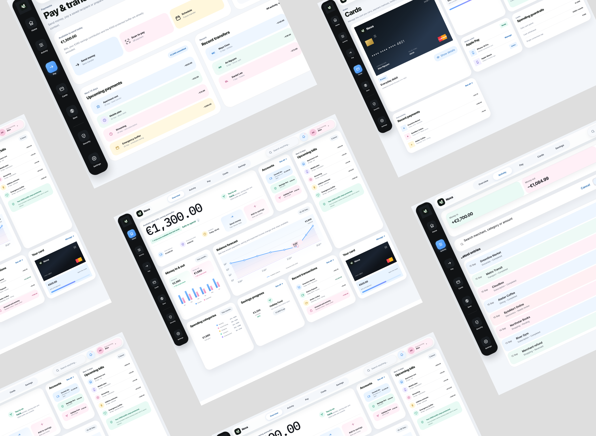
Consumer decision designPersonal finance organized around a harder question than “what is my balance?” — what is actually safe to spend after known obligations and a protected buffer?
Bring future obligations into the primary money-decision surface without turning home into a spreadsheet.
Alternatives, trade-offs, recovery states, working responsive prototype and Round 01 usability validation recruiting with 0 verified sessions.
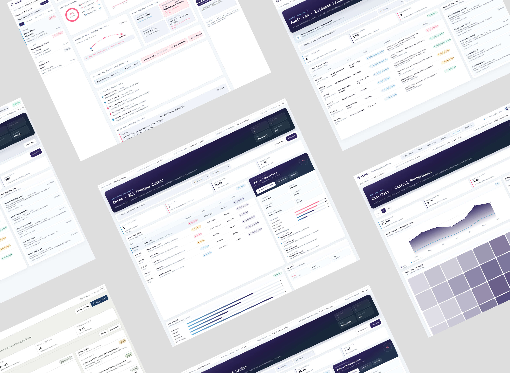
Operational systemsA high-density investigation workspace organized around one consequential decision: correlate evidence, understand conflicts and record a defensible action without losing context.
Keep alert priority, forensic evidence, consequence and recovery visible inside one stable investigation model.
Queue, evidence, decision and recovery states demonstrate pressure beyond a happy-path dashboard.
Evidence boundary: Nova and Sentry are independent concepts. Nova Round 01 is recruiting with 0 verified sessions; Sentry remains unvalidated. UIUX Factory and Resolve AI repositories are working technical evidence; adoption, user outcomes and business impact remain separate claims.
Measurement policy: numeric thresholds across this portfolio are labeled as targets until traceable baseline/outcome evidence exists. Task-based UX measures prioritize completion, time, errors and confidence/ease where appropriate. Inspect all project targets ↗
How I use AI
My workflow uses AI where it creates leverage — grounding, synthesis, alternatives, implementation, critique and QA — while keeping user evidence, product priorities, design rationale and release decisions explicitly human-owned.
Agents inspect the repository, brief, routes, constraints and evidence gaps before proposing UI. Facts, inferences, assumptions and unknowns stay separated.
Inspect agent contract ↗References and AI alternatives pass through ADOPT / ADAPT / REJECT decisions. Model critique can reveal risks, but it is never relabeled as user research.
Inspect routed skills ↗AI helps translate approved flows, states, tokens and responsive contracts into working products. Static prototypes stay labeled honestly; Resolve AI is a CI-verified Next.js 16 / React 19 / TypeScript 7 implementation with typed state, App Router and production build/typecheck gates.
Inspect Next/TS proof ↗Playwright/Chromium, axe-core and Lighthouse diagnostics check routes, viewports, accessibility and visual integrity. Failures loop back to the stage that owns the problem.
Inspect cloud QA ↗Process note
The useful question is not which model generated a screen. It is whether the workflow preserves authority, evidence, review criteria and a repair loop.
Why faster generation increases the need for explicit authority, evidence states, design contracts, browser QA and human learning loops — and what UIUX Factory taught me about operating leverage.
Supporting capability library
14 projects · 7 domains · capability signals
Role, scope, complexity and evidence are shown on every card. Project-duration claims stay unpublished until they are source-backed; no timeline is invented for visual completeness.
Immersive digital experiences that use editorial storytelling, spatial discovery and interaction craft to turn art and place into exploratory journeys.
02 Projects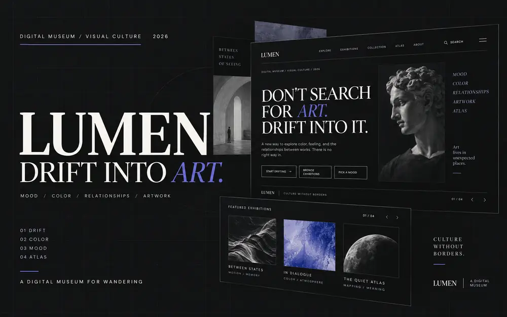
An experimental digital museum that reimagines art discovery through mood, color, era, movement and relationships between artworks instead of relying only on search and category grids.
Drift, Grid, Color and Mood discovery modes lead into artwork detail, saved collections and a relationship atlas.
Cinematic, intellectual and experimental — combining editorial storytelling, purposeful motion and responsive cultural exploration.

A cinematic study of Huế following the Perfume River through imperial thresholds, living streets and royal landscapes.
Re-authored a borrowed interaction pattern into a Huế-specific visual and narrative system.
Poetic, imperial and atmospheric — with Vietnamese editorial typography and deliberate scroll choreography.
High-consideration retail discovery, tactile product confidence, room context, dimensions and editorial-to-cart conversion.
03 Projects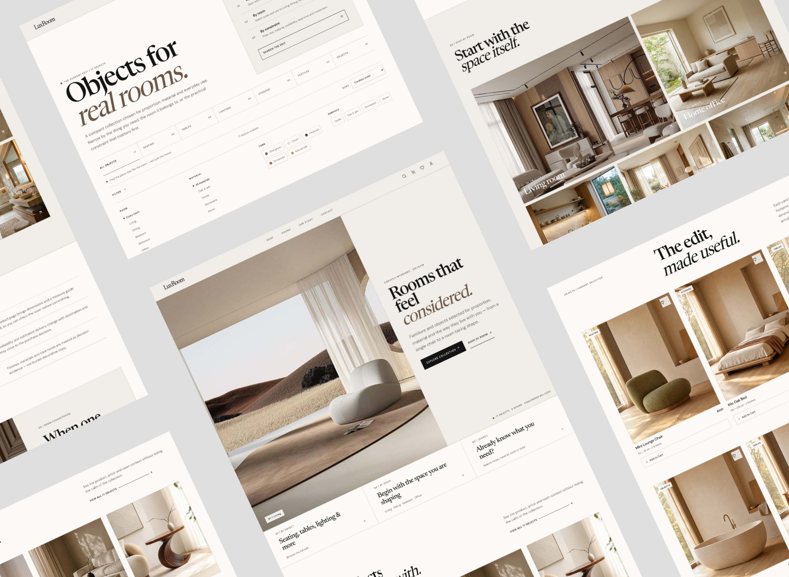
Premium furniture discovery that carries room context, dimensions, materials and variants into the purchase decision.
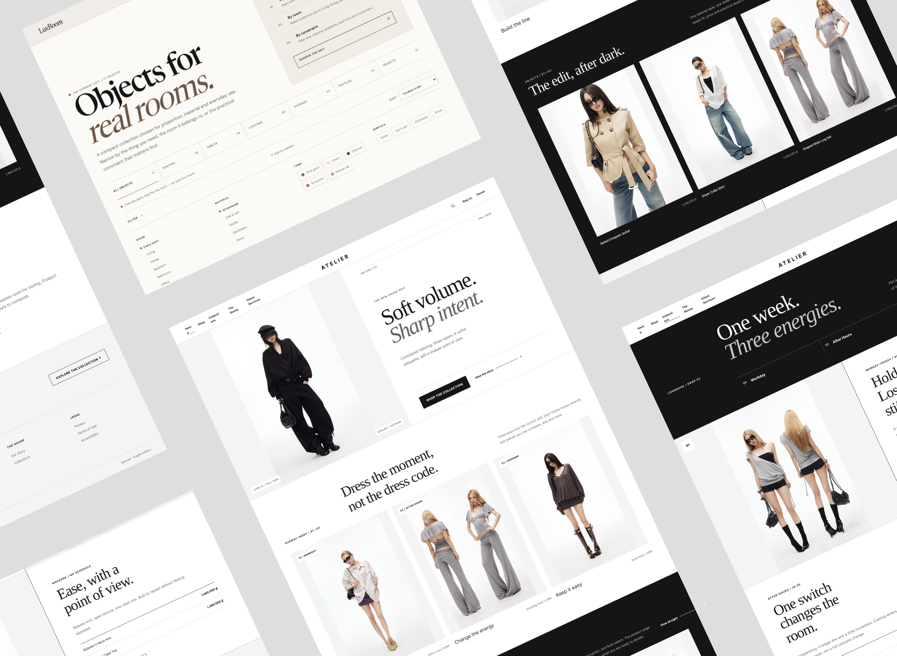
Editorial expression with shopping clarity, using information density that grows from discover → evaluate → buy.
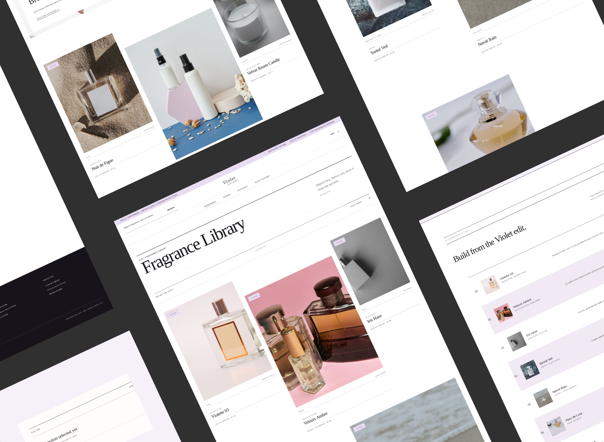
Image-led fragrance discovery balancing product storytelling, scent confidence and marketplace utility.
Trust-heavy financial journeys, multi-currency treasury operations, fraud forensic workstations and explainable money movement.
03 ProjectsEveryday banking designed around safe-to-spend context, trust cues and recoverable money movement.

A multi-currency operating cockpit connecting liquidity, reserves, FX exposure and settlement context.
A split investigation workspace for alert priority, forensic evidence, risk signals and block-or-allow decisions.
Enterprise access governance, commercial real estate leasing platforms, and scalable B2B digital brand systems.
03 Projects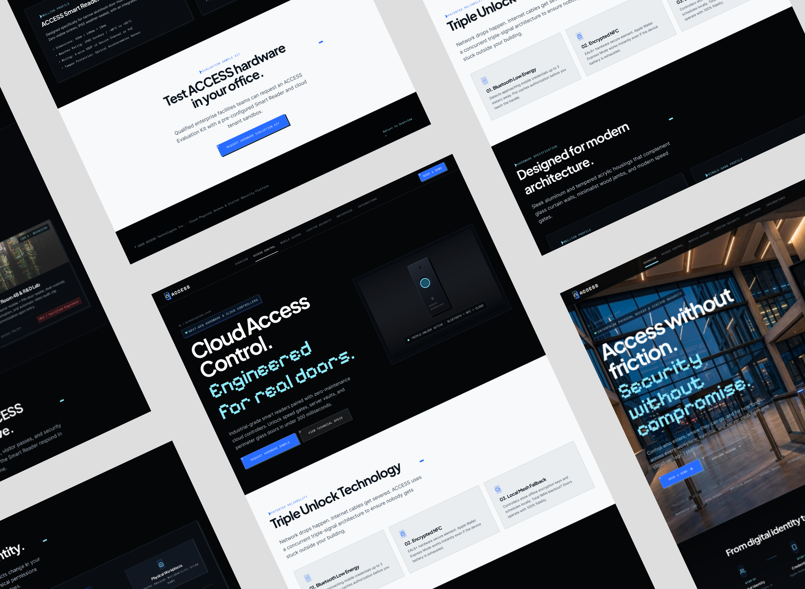
Cloud physical access & visitor security platform reframed from identity to door — Apple Wallet credentials, touchless guest flows, and zero-trust spatial controls across modern workplaces.
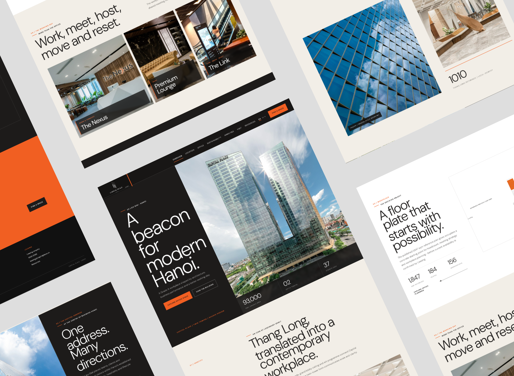
Commercial real-estate discovery reframed as place → space requirement → floor context → enquiry.
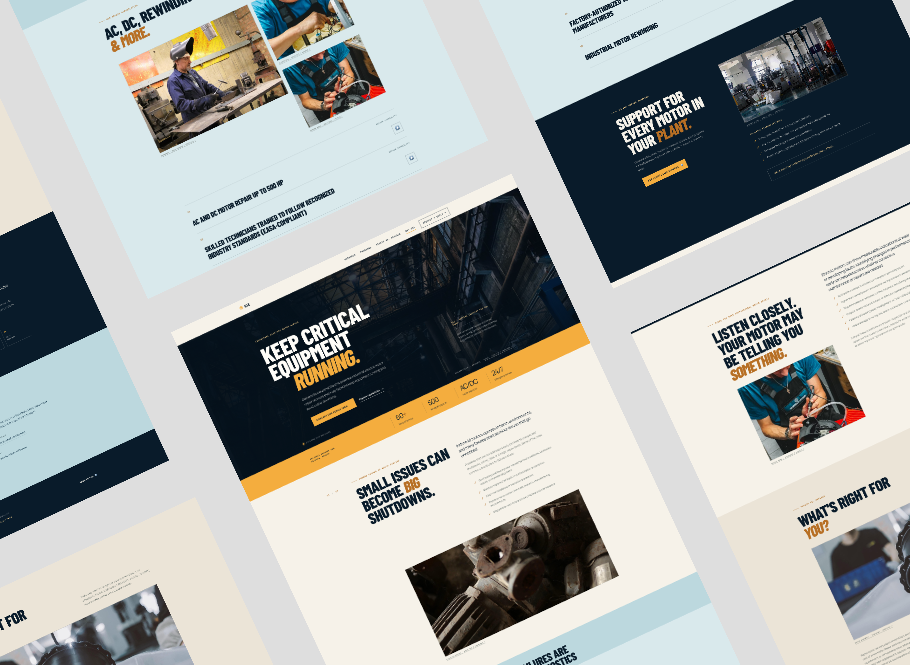
A responsive B2B concept focused on brand translation, reusable sections and implementation-ready composition.
Institutional trust architecture, curriculum transparency, and parent enrollment decision funnels across multi-campus networks.
01 Project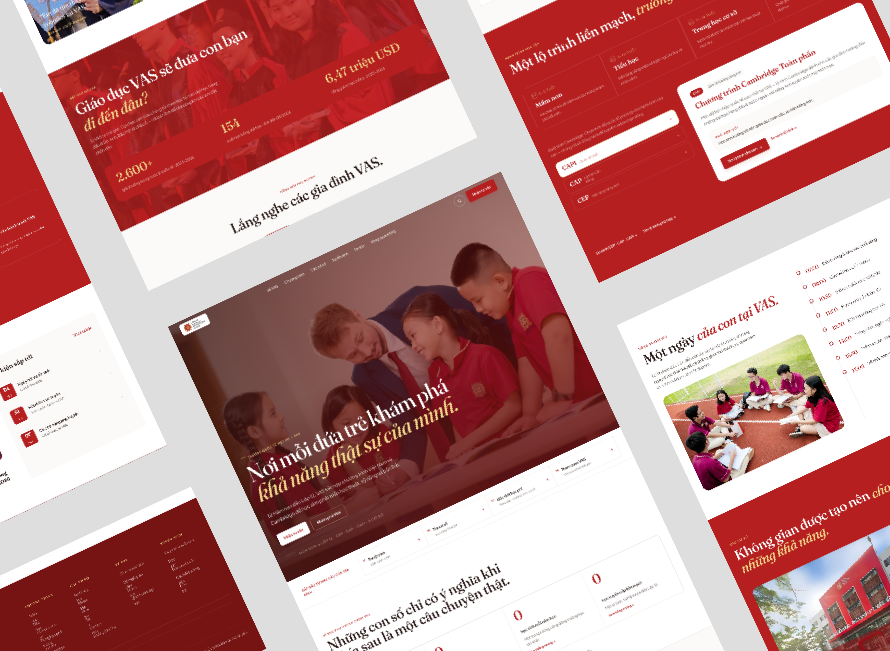
A parent decision journey that turns complex programs, multiple campuses and admissions into trust → fit → action. Transformed dense academic PDF lists into structured curriculum comparison and instant campus tour booking.
Electric mobility product storytelling, vehicle specifications, charging network infrastructure and bilingual corporate experiences.
01 Project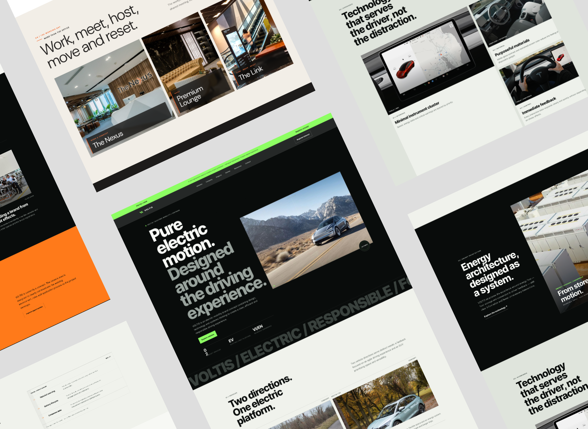
Product storytelling, corporate IA and implementation-ready interaction for an electric-mobility brand. Balances clean vehicle aesthetics with technical specs, range metrics and corporate investor relations.
AI-assisted design operations, verifiable design contracts, tokenized component architectures, and browser QA loops.
01 ProjectA staged design-engineering workflow connecting research, IA, art direction, contracts, implementation and rendered QA. Replaces fuzzy handoffs with verifiable contracts and automated visual testing.
Staged ADOPT / ADAPT / REJECT contracts ensuring visual decisions are grounded in requirements.
Automated viewport, typography crop and accessibility validation executed directly in real browsers.
Professional experience
Evidence rule: product or business impact is published only when its source and context are retained. Otherwise the portfolio shows role, scope, decisions, collaboration and delivery responsibility directly.
Historical job titles remain truthful. Product thinking is shown through framing, flows, systems, states, collaboration and implementation responsibility — not by retroactively renaming UI/UX roles.
Led UI/UX redesigns and information architecture across 8+ client-facing web platforms. Standardized component architectures and responsive contracts for direct developer handoff.
Structured user flows, wireframes, and design systems for 15+ product journeys. Built comprehensive state specifications covering edge cases and error states prior to development.
Partnered with engineering teams to design responsive product flows and reusable UI pattern libraries, establishing strict design-to-code specifications for MVP builds.
AI-assisted design operations
UIUX Factory is the operating layer behind how I work with AI: project truth → evidence → design contract → implementation → browser evidence → root-cause repair. The system is real; adoption and efficiency outcomes remain future evidence.
Contact
I am looking for Product Design work where complex decisions, systems thinking, strong UI craft and AI-assisted execution can meet real user evidence and measurable product learning.
anhnghia9a633@gmail.com